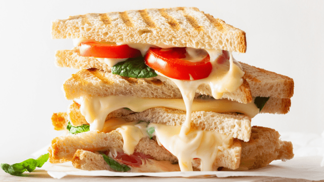

Vegetable Sandwich

Vegetable is an all time favorite of mine and I am excited to share my recipe with you. It is easy to make and delicious at the same time.
Hope you enjoy it and much as I do. Thanks!
Ingredients
- Whole wheat bread: 2 slices
- Onions: diced
- Green chutney
- Seasonings: chilli flakes and oregano
- Cheese: Grate your own Parmesan cheese instead of using the pre-shredded stuff.
Procedure
- Butter the bread on one side
- Layer green chutney on the non buttered sides.
- Add onion stuffing on top. Optionally corn.
- Garnish with seasonings.
- Grill in a sandwich maker.